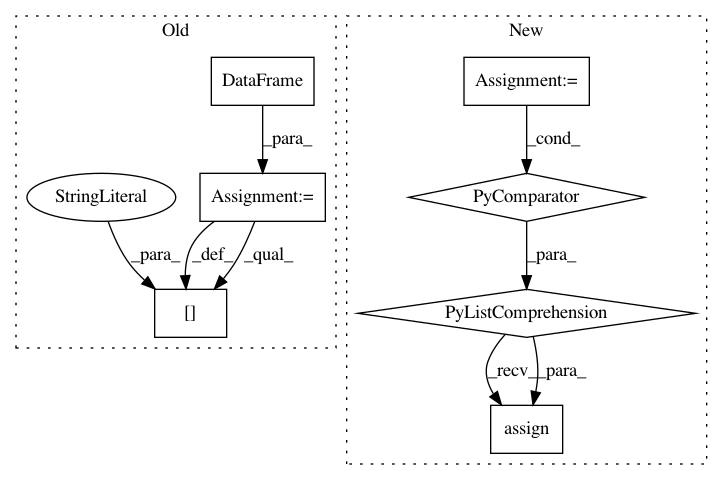

a3b39f9e6e7e1b33a3eb9919923d939430b60b86,QUANTAXIS/QAFetch/QATdx.py,,QA_fetch_get_index_day,#Any#Any#Any#Any#Any#,208
Before Change
def QA_fetch_get_index_day(code, start_date, end_date, ip=best_ip, port=7709):
api = TdxHq_API()
with api.connect(ip, port):
data = pd.DataFrame()
for i in range(10):
data = data.append(
api.to_df(api.get_index_bars(9, 1, code, (9 - i) * 800, 800)))
data["date"] = data["datetime"].apply(lambda x: x[0:10])
data["date"] = pd.to_datetime(data["date"])
return data.set_index("date", drop=False, inplace=False).drop(["year", "month", "day", "hour", "minute", "datetime"], axis=1, inplace=False)[start_date:end_date]
After Change
def QA_fetch_get_index_day(code, start_date, end_date, ip=best_ip, port=7709):
api = TdxHq_API()
with api.connect(ip, port):
data = pd.concat([api.to_df(api.get_index_bars(
9, 1, code, (9 - i) * 800, 800)) for i in range(10)], axis=0)
return data.assign(date=pd.to_datetime(data["datetime"].apply(lambda x: x[0:10]))).set_index("date", drop=False, inplace=False).drop(["year", "month", "day", "hour", "minute", "datetime"], axis=1, inplace=False)[start_date:end_date]
def QA_fetch_get_index_min(code, start, end, level="1min", ip=best_ip, port=7709):
In pattern: SUPERPATTERN
Frequency: 3
Non-data size: 7
Instances
Project Name: QUANTAXIS/QUANTAXIS
Commit Name: a3b39f9e6e7e1b33a3eb9919923d939430b60b86
Time: 2017-09-01
Author: yutiansut@qq.com
File Name: QUANTAXIS/QAFetch/QATdx.py
Class Name:
Method Name: QA_fetch_get_index_day
Project Name: QUANTAXIS/QUANTAXIS
Commit Name: a3b39f9e6e7e1b33a3eb9919923d939430b60b86
Time: 2017-09-01
Author: yutiansut@qq.com
File Name: QUANTAXIS/QAFetch/QATdx.py
Class Name:
Method Name: QA_fetch_get_stock_latest
Project Name: QUANTAXIS/QUANTAXIS
Commit Name: 5c34d497ab32ea731b687c5863f104615f666d06
Time: 2019-02-16
Author: yutiansut@qq.com
File Name: QUANTAXIS/QAFetch/QAQuery.py
Class Name:
Method Name: QA_fetch_index_day